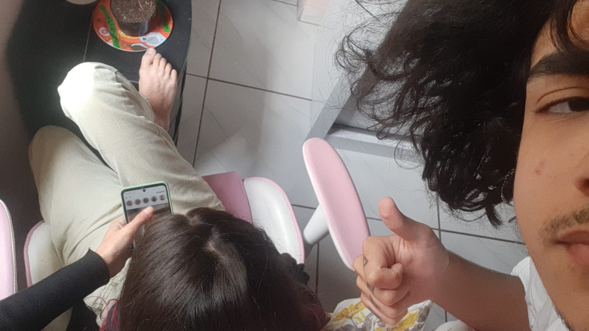
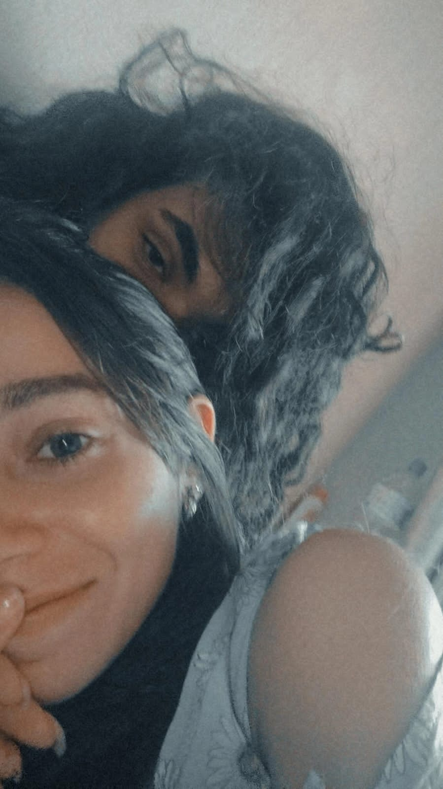

Oi, meu amor!
Esse é um projeto que eu pretendia te mostrar só no nosso aniversário de namoro, mas decidi adiantá-lo. Coloquei aqui toda minha dedicação e todo meu amor por ti, além de noites sem dormir. Espero que goste, sua linda!
Eu sei que estamos passando por momentos difíceis e sei também o quão cansada você está. Confesso que me sinto um pouco insuficiente por não poder te ajudar, por não poder tirar esse peso das suas costas. Tudo que eu mais quero é te dar um abraço bem apertado para que você fique bem, segura, acolhida.
Um relacionamento é isso, a gente esteve juntos em todos os momentos bons e agora estamos experimentando a parte difícil, os momentos de luta. Vamos superar isso, logo logo. Enfim...
Se estamos namorando, uma das minhas responsabilidades é fazer você se sentir segura, e não falo isso pra simplesmente te causar boas impressões, falo porque eu te amo e sei que meu coração escolheu você e cada detalhe, Meu amor será todo seu até o fim da minha vida. E se não for pedir muito, quero você por uma vida toda.
Você deveria se sentir a mulher mais maravilhosa e incrível, porque você é! Sei que você não tem se visto assim, mas você tem detalhes lindos e que valem a pena passar o dia todo os admirando. Em você existem traços tão únicos e encantadores, que o espelho tem muita sorte de te ver todo dia. Eu queria poder te dar meus olhos pra você poder se ver da mesma forma como eu te vejo. Uma mulher linda em cada detalhe, absolutamente perfeita, esforçada e dedicada em tudo, extremamente inteligente e talentosa, uma companheira de alegria contagiante, a mulher com o sorriso mais lindo e encantador do mundo, aliás, a minha mulher. Você é completamente LINDA!
Você me deu mil motivos pra sorrir, agora quero te dar mil motivos pra ser feliz. Desculpa a intensidade em te amar tanto e te querer sempre por perto, é que entendi que só tenho essa vida e não sei até quando. E convenhamos... a vida é muito curta pra te amar tão pouco.
Eu te amo mais que tudo!!!
Nosso cantinho de recordações
N° 001
Eu
N° 002
encontrei
N° 003
em
N° 004
você
N° 005
tudo
N° 006
que
N° 007
eu
N° 008
sempre
N° 009
quis
N° 010
em
N° 011
alguém.
N° 012
Você
N° 013
me
N° 014
mostrou
N° 015

e
N° 016
me
N° 017
ensinou
N° 018
uma
N° 019
forma
N° 020
completamente
N° 021
diferente
N° 022
de
N° 023
como
N° 024
amar.
Nossas cartinhas e textinhos
De Mari pra Roi
-
Oi!
- (eu de desistir de fazer uma letra bonita).
- (neste momento estou tendo aula, mas ninguém se importa).
- (espero que não se incomode com as cores de canetas diferentes).
- Vamos lá, ao garoto que conquistou meu coração: Eu espero que você tenha noção do quanto é importante pra mim. Espero que saiba que eu não te trocaria por nada e não poderia pedir alguém melhor.
- São exatamente 20:01, do dia 17/10/2022 e apesar dos 23°, alguém ligou um forno e esqueceu de desligar. Obviamente estou pensando em você e te digo, realmente não sei o que fez pra eu pensar tanto assim em você, mas funcionou (e muito).
- Bom, vamos por partes, o começo de tudo: eu nunca imaginei que você (logo você) gostaria de mim. Por isso é tão surreal quando você diz que me ama, a dois anos você tava muito distante de mim, e agora tá tão perto que eu não consigo acreditar (ás vezes me pergunto: será que trocaram o Roi e eu não percebi?).
A partir daqui, eu poderia muito bem escrever um livro, quando o assunto é você, tenho muito pra falar.
Seria demais dizer que você mudou a minha vida e minha forma de pensar? Confesso que fiquei com medo no começo, eu achei que você desistiria facilmente e pra minha surpresa não foi o que aconteceu.
Agora você faz meu coração acelerar, a saudade que eu sinto não me dá um segundo de paz e eu te quero um minuto depois de você ir embora.
Queria te mostrar o quão importante é pra mim. Quero te fazer se sentir amado e especial, se possível como ninguém te fez sentir.
Quero estar do seu lado em todos os momentos e poder te lembrar que sem você minha vida talvez desande uns quilômetros suficientes pra não ir pra frente mais.
Quero que você me lembre o quanto me ama todo dia. Quero que saiba que eu te amo tanto quanto você me ama. Não quero te perder nunca e quero viver um bom tempo contigo.
Algumas coisas que eu queria que você soubesse:
- Você é lindo!
- Sua voz é muito gostosa e tranquilizante.
- Eu amo quando você joga seu cabelo pro lado ou prende ele.
- Amo quando você segura minha mão.
- O seu abraço me faz sentir segura, é minha segunda casa e o melhor lugar do mundo.
- Você é LINDO demais.
- Seus olhos me trazem calma, eu acho lindo quando você me olha.
- Eu me sinto a mulher mais sortuda do mundo ao seu lado.
- Eu te daria o mundo se eu pudesse.
- O seu sorriso me deixa toda sem jeito, você ilumina meu dia com ele (que clichê).
- Seu beijo, olha, te dizer, é bom pra demais da conta.
Eu realmente queria escrever mais, mas os meus dedos não me permitem. Aguarde que virá um maior que esse.
Não se esqueça que eu te amo, você é minha vida, amor!
Beijos, sua namorada, Mari.
De Mari pra Roi
Eu queria encontrar uma forma de dizer que eu te amo e escrever sempre vai ser minha forma preferida de demonstrar isso. Provavelmente daqui a um tempo estaremos tomados de saudade, os dias demorarão mais para passar e um mês sem nos vermos se tornará um ano. Mas essa aqui é minha forma de acalmar nossos corações e te dizer que: independente de qualquer coisa estarei sempre do seu lado. A partir daqui cada parágrafo foi escrito separadamente. Cada um foi escrito de acordo com coisas que eu queria que você soubesse ou lembrasse. Divirta-se.
Antigamente eu te observava como alguém nada carinhoso. Talvez eu já tenha te falado isso. Hoje eu me deparo com uma pessoa muito dengosa e carinhosa, inclusive mais do que eu. Essa é uma das coisas que eu admiro em você. Além, claro, de outras mil e uma, que se eu fosse citar acabaria em um livro com pelo menos 20 volumes. Mas fique sabendo que eu admiro sua força de vontade, todo seu esforço pra que as coisas deem certo.
Admiro sua paciência (alguém no relacionamento tinha que ter e esse alguém não sou eu). Admiro como você cuida de mim. Você é extremamente cavalheiro. Admiro que diga "eu te amo" pelo menos 500 vezes por dia e saiba que em todas as 500 você faz meu coração acelerar. Admiro sua capacidade. Você é muito inteligente e isso me enche de orgulho. Enfim, admiro você por inteiro, não mudo nada. Eu amo você. Exatamente assim.
O que eu sempre farei questão de lembrar é que não importa quanto tempo passe, dias, anos, eu sempre te amarei, esperarei e acima de tudo serei grata por todos os momentos que passamos juntos, que com certeza foram os melhores de toda a minha vida.
As vezes eu lembro da primeira vez que me disse "eu te amo". No momento eu pensei: "que loucura, a gente se conhece não tem nem 1 mês". Eu, totalmente acostumada com os meus amores fracassados e frustrados, achei que nós não duraríamos nem dois meses, que você enjoaria de mim ou seria como todos os outros (que pecado te comparar dessa forma, me perdoa, eu não sabia o erro que tava cometendo). Quebrei a cara! Fiz coisas que nunca fiz por ninguém e com ninguém. E cá estamos nós, quase um ano juntos. Que orgulho de te ter na minha vida.
Tava pensando em cada vez que te vi. Fico feliz que o frio na barriga continue o mesmo desde o começo. Ver você sempre me trazia uma sensação de paz e até hoje é isso que você me transmite. A primeira vez que eu te vi, parecia um sonho, eu me senti muito bem. Era bom e é bom olhar pra você e pensar que o garoto que eu gostei a 2 anos atrás hoje está do meu lado, sendo a melhor coisa da minha vida, me fazendo me apaixonar novamente todos os dias.
Você me faz sentir como se no mundo existisse só nós dois. É difícil descrever tal sensação. Como pode existir uma pessoa tão linda assim? Você desperta em mim o melhor sentimento. Ser amada por alguém assim é tão maravilhoso. E eu acho que nunca soube o que era amor, o que eu sabia era tão raso, tão superficial. Tu me ensinou a ser melhor, que o amor não é algo ruim. Você é e sempre será meu maior exemplo de amor.
Tenho plena certeza que meus dias seriam muito sem graça se você não estivesse neles. Na verdade eu não consigo nem imaginar. Não tem um dia que você não me faça sorrir, mesmo com as nossas brigas. Aliás, o que seria de mim sem você? Quem iria me irritar na TPM? Quem iria me mandar mais de 10 reels e reclamar que eu não respondo nenhum deles? E o pior: o "fon fon" deixaria de existir. Isso sim seria uma tragédia. Quero que tenha noção que você mudou a minha vida. Que por você eu fui além e aprendi muito, e até hoje você continua me guiando e me dando total apoio. Lembre-se que nada nesse mundo, nem mesmo a distância, vai me fazer desistir de você. Todos meus planos do futuro incluem você. O presente já é maravilhoso e eu espero que o nosso futuro seja muito mais, juntos nós vamos conquistar tudo o que queremos, nossa casa, gatinhos e lanche!
De Mari pra Roi
Sim, lá vamos nós com outra carta (você não tem nenhum direito de reclamar sobre).
Eu procurei por muito tempo alguém que me fizesse sentir única e amada. Entre erros e mais erros, medos e inseguranças, você apareceu. É mágico como você conseguiu e consegue conquistar meu coração todos os dias.
Eu me perguntava o motivo das coisas serem tão complicadas até eu perceber que eu só não estava com a pessoa certa. Me pego pensando em como você foi capaz de me fazer sentir algo completamente novo e diferente.
Me encantei por você duas vezes e agora eu agradeço por não ter dado certo na primeira vez, não tem nada que pague te olhar e lembrar de você no passado sabendo que tu tá aqui comigo hoje. Eu não me arrependo de nada e com certeza faria tudo de novo.
Você é o garoto que tá nos meus sonhos quase todos os dias (suspeito que seja macumba) e eu tenho a sorte de poder acordar e te contar sobre isso.
Não quero perder essa sensação nunca. Estar com você é a coisa mais linda que existe e pela primeira vez eu não consigo explicar ao certo o que isso me causa.
Penso em você todos os dias antes de dormir e todos os dias depois de acordar. Seu sorriso é tão marcante, tão lindo, tão encantador, que eu ficaria horas te observando (só não prometo não rir).
Cada vez que eu te olho me dá vontade de ficar pra sempre ali, do seu lado, que é o lugar que eu me sinto mais segura e bem.
Saiba que eu te amo daqui a eternidade, sempre.
Eu te amo, vida.
Com amor, Mari.
De Mari pra Roi
Por último vamos falar do que realmente importa. Nossa vida juntos talvez tenha dado uma reviravolta. Falar sobre isso aperta meu peito, pois eu sei que algumas coisas vão mudar.
Mas, apesar de tudo, eu desejo que sua vida só fique melhor de hoje em diante. E por mais que iremos ficar um tempo separados, bem maior do que estamos acostumados, eu espero que você me espere.
Quero fazer de tudo pra que no futuro nós possamos viver um do lado do outro, sem ter que esperar até nos vermos novamente.
Por mais que isso tenha sido difícil, eu fico feliz por você estar feliz e faço planos pra estar do lado da minha fonte de felicidade (você).
Quando a saudade apertar muito, lembre-se que esse tempo é necessário pra que coisas melhores aconteçam. E se você ousar pensar em terminar comigo, Deus irá queimar todos seus neurônios.
Eu te amo muito e tô torcendo por você. Nos momentos difíceis que eu não puder estar perto, não hesite em me ligar, a qualquer hora, qualquer momento, estarei aqui, sempre. ❤️
You'll alwayas have a place in me.
Obrigada por simplesmente ser você.
Por nunca desistir de mim.
Por ter me procurado aquele dia.
E principalmente:
Por me amar.
De Mari pra Roi
-
 Eu te amo porque você me faz sorrir todos os dias, mesmo quando tô brava contigo (sem motivo a maioria das vezes).
Eu te amo porque você me faz sorrir todos os dias, mesmo quando tô brava contigo (sem motivo a maioria das vezes).
-
Eu te amo porque você é meu porto seguro, minha segunda casa, meu bem mais precioso e a melhor coisa que aconteceu na minha vida.
-
Eu te amo porque você é a pessoa mais incrível do universo, o namorado e melhor amigo mais lindo da face da terra.
-
Eu te amo porque quando você chegou na minha vida, me fez entender o que é amar, me impressionou com seu jeito e roubou meu coração.
-
Eu te amo porque você me trata da forma mais linda do mundo.
-
Eu te amo porque você me faz sentir coisas que eu nunca senti. Você me traz tranquilidade e paz.
-
Eu te amo porque você está sempre comigo, me apoiando, me dando atenção, me escutando, enfim, você é lindo.
De Mari pra Roi
- Eu amo ser sua namorada. Sim, eu tenho noção da sorte que eu tenho de ter você. Me gabarei eternamente por isso.
- Eu amo o jeito que você faz drama quando tá com dor. (eu cuido).
- Eu amo sua voz. Demais!
- Eu amo o som da sua risada.
- Eu amo sua carinha de sono. -hehe.
- Eu amo seu jeito engraçado.
- Eu amo seu cabelo. -tem como não amar?
- Eu amo quando você diz que me ama.
- Eu amo quando você me chama de amor.
- Eu amo seus olhos. -são lindos.
- Eu amo o quanto você se esforça por nós.
- Eu amo suas mão. -principalmente quando tá na minha.
- Eu amo quando você faz cosquinha em mim. (ou tenta fazer) KK KK KK KK
- Eu amo o seu estilo. -você fica lindo de todo jeito
- Eu amo seu abraço. -cuidado, eu quebro fácil.
- Eu amo sua calma e sua paciência. -KKKKKK.
- Eu amo quando você fica me olhando.
- Eu amo cada detalhe em você. -Exatamente tudo.
- Eu amo quando você segura minha mão.
- Eu amo seu cavalheirismo. -meu garoto.
- Eu amo seu carinho. te amo
- Eu amo seu beijo. -claro, né...
- Eu amo o seu sorriso. -olha, sorri escrevendo isso!
- Eu amo seu cheiro. Acho que você sabe disso. hehehe. (é muito bom, senhor Luciano).
- Eu amo como você se dedica pelo que ama. Não desiste nunca das coisas difíceis. Você tem uma capacidade incrível. E é um garoto incrível.
- Eu amo a minha vida ao seu lado. Não tem nada que me faça mais feliz do que te olhar nos olhos, olhar cada detalhe seu e perceber que você é meu mundo todinho e que eu te tenho do meu lado. Obrigada por me amar e por estar aqui.
De Roi pra Mari
Bom, nunca fui muito de escrever, então não sei nem por onde começar. Apenas espero que você goste. Te amo muito e boa leitura.
OBS: Peço que ignore as partes com corretivos (se tiver), os erros ortográficos que passaram desapercebidos e minha letra feia.
Gostaria de começar essa carta voltando lá atrás, no dia que te vi caminhando perto da prefeitura. A partir daquele dia minha vida mudou totalmente. Aquele dia eu vi uma mulher que fez meu coração palpitar só de olhar pra ela. Era facilmente a mulher mais linda que já vi (eu já tinha visto você passando outras vezes, mas nunca reparei de fato em você). Acho que já te contei isso, mas depois de te ver eu passei uns dias querendo muito te mandar mensagem, porém sem coragem. E nossa... depois que eu finalmente mandei mensagem foi um alívio tão grande, um sentimento de felicidade e esperança. Esperança de você ainda ter aquele mesmo interesse em mim que tinha em 2020. Bingo! Você tinha. Dali pra frente foi só alegria. Depois de 3 semanas conversando todos os dias, saímos a primeira vez. Esse dia foi uma virada de chave na minha vida. Depois daquele beijo minha vontade era pegar aquele ônibus e, invés de ir pra escola, ir te ver TODO DIA. Você fez eu gostar de acordar 5h da manhã pra me arrumar, você fez eu gostar de sair de casa, você fez eu querer ir pra escola, você virou minha pessoa favorita. Desde então comecei a te amar cada dia mais. Eu passava ansiosamente esperando pelos dias que a gente se encontraria de novo, era a minha parte favorita da semana e a única que a vida fazia sentido, quando eu tava junto de ti.
É muito doido pensar que uma pessoa que eu nem sabia da existência, hoje é alguém que eu não consigo imaginar fora da minha vida. DOIDEIRA.
Desde que me mudei as coisas ficaram muito difíceis, muito mais do que imaginávamos. A 1 semana que tinhamos que esperar pra nos vermos virou 2 meses. Se o dia tá ruim não posso só pegar um ônibus, esperar 30min e ir te dar um abraço bem apertado. Os dias viraram uma grande batalha interna onde a ansiedade tem vencido. Por isso que vou voltar. Quero estar sempre perto, voltar a ser seu maior suporte, seu porto seguro. Vou lutar muito por isso, mesmo que tenha que te ver só uma vez por semana igual antes, mas terei você.
Enfim, eu queria que você soubesse o quanto eu amo ouvir sua voz e o quanto eu amo passar horas conversando com você. Estar com você (independente de como) é a melhor parte dos meus dias. Eu amo sentar e olhar pro nada imaginando cenários de nós na minha cabeça. Coisas básicas como assistir filme juntos, abraçar, fazer bagunça na cozinha, ter conversas profundas, viajar juntos, beijar como se fosse a primeira vez... eu sinto sua falta e tudo que mais quero é estar com você.
Ultimamente tenho sentido tanto medo de te perder, pq eu tenho certeza absoluta que você é o amor da minha vida. Eu amo você e preciso de você comigo. Você supriu necessidades que eu nem sabia que tinha. Você curou feridas que eu nem sabia que tinha. Você deu cor ao meu mundo que eu nem sabia que era cinza. Você é tudo pra mim. Por mais que tudo esteja difícil, não desista de mim. Estou tentando dar meu melhor, você é a única pessoa que alegra meu dia. Eu não vou perder o sentimento por ti e nem encontrar alguém melhor, pq aos meus olhos você é a garota mais perfeita e incrível que já conheci, eu irei te escolher sempre. Eu quero nós dois, nossa casa, nossa bagunça, nossos momentos. Eu quero nós dois sempre juntos, e sinceramente... uma vida inteira ainda é pouco pra te amar.
Quero que aproveite bem seu aniversário, os mimos dessa caixa e, principalmente, o Roizinho aqui (que não tem data pra voltar pra casa).
Eu amo você em cada detalhe.
Obrigado por ser minha namorada;
Por ser meu ponto de felicidade todos os dias;
Por não ter desistido de mim;
E principalmente;
Por me amar.
De Roi pra Mari
Oi, mo. Tô escrevendo isso em plena madrugada (to a caminho de SP e não consigo dormir). Sei q tá tudo muito difícil pra gente, vc preocupada com a faculdade, eu com ansiedade, a gente discutindo e tals, mas n deixa nenhum problema afetar a forma como vc vai ler isso aq n, por favorzinho. Leia como minha marizinha ❤️
Eu sei o quão chato e irritante eu sou, sei dos meus defeitos e peço desculpa por eles. Minha mente acaba cmg dia após dia. Tô morrendo de saudade de vc, tô louco pra te ver e não tem um dia q n pense em como eu queria poder te dar um abraço e um beijinho pra alegrar meu dia. Agr tô um pouco mais tranquilo pq já tô indo pra aí pertinho de vc e sei q amanhã vou aí passar o dia cntg.
Tenho medo deq vc esteja enjoando ou se cansando de mim, pq vc tem me tratado cada vez pior. As vezes nem parece q a gente namora, sabe. Isso acaba cmg. Queria mt n ter saído de Itatiaia, pq antes isso só acontecia nas raras vezes que a gente ficava mt tempo sem se ver (mais de uma semana).
Enfim, isso n é pra ser um texto triste. É pra ser algo q eu possa te mandar em algum momento difícil, pra reforçar o quanto q eu te amo e de como eu só preciso te ver, sentir seu cheiro e ouvir sua voz ❤️❤️❤️
Eu queria que vc pudesse se ver como eu te vejo. Vc é absolutamente tudo pra mim, vc é minha esperança quando eu tô nos piores dias, vc é o motivo da minha alegria, vc é o motivo dos meus olhos brilharem e do meu coração ficar acelerado, vc é meu motivo pra continuar mesmo cansado de tudo, vc é meu combustível, vc é e sempre será minha melhor escolha de vida. Prometo sempre dar o meu melhor pra te fazer feliz e cuidar de vc, pq sua felicidade é minha felicidade também. Vc é a pessoa q me da um milhão de motivos do pq eu devo continuar aqui, só vc tem a chave do meu coraçãozin. Eu não quero outro sorriso, outro riso, outro carinho, outro abraço, outra mão segurando a minha, outro beijo, outra mensagem de bom dia. Não quero outro amor além do seu e nem alguém além de vc. Eu quero vc. E quero pra toda minha vida. Não pense em desistir da gente, sei q é meio difícil lidar comigo e sei que seu tempo tá curto pra mim, mas n desiste de nós. Prometo te amar mesmo que estejamos brigados, com raiva ou com problemas, nada disso vai mudar o fato de vc ser o amor da minha vida.
E a propósito...
Eu te amo ❤️
De Roi pra Mari
Oi
Fico mt feliz q vc esteja bem dnv, amo te ver bem. Sei q foi um período mt difícil pra ambos, mas nossa... fiquei com muito medo de te perder, perder minha maior preciosidade. Tudo q eu mais quero nessa vida é ter vc pra sempre, é crescer na vida com vc, é conquistar as coisas com vc, é envelhecer do seu lado, é partilhar a vida cntg. Vc é oq mais amo no mundo e oq sempre vou amar. Eu ainda quero tomar mais starbucks contigo, eu ainda quero experimentar Ministro Burger cntg, eu ainda quero presenciar sua formatura, eu ainda quero te dar o box de sherlock, eu ainda quero te encher de linhas, eu ainda quero conhecer gramado cntg, eu ainda quero vc pra toda minha vida e sempre vou querer. Fale q me ama pfv, pois eu te AMO MUITO ❤️
BOM DIA, AMOR DA MINHA VIDAAAAA
De Roi pra Mari
Vc com certeza vai acordar primeiro, ent já vou deixar aq minha msg de bom dia.
Espero q vc tenha dormido mt bem e tenha acordado renovada e disposta pra fazer tudo oq tem q fazer, igual quando a gente começou a conversar q ce me mandava uns bom dia mt animados e falava q era pq a vida é linda. Quero q saiba q tenho muito orgulho de vc pelo tanto q vc se esforça e por nunca ter desistido, independente da dificuldade. Eu te amo absurdamente em cada detalhe e estou louco pra te ver e te dar um belo abraço, vc é minha luz e meu combustível. Enfim, eu te amo mais que tudo sua linda.
BOM DIAAAAAAAAAAAAAA
Músicas dedicadas
| Quem dedicou | Músicas | Trecho |
|---|---|---|
| Mari | Porque Eu Te Amo | Porque eu te amo e não consigo viver sem ser o seu amor por anos. Não é acaso, é só amor. |
| Mari | Canção de hotel | A luz que banha toda a cidade pequena se faz num riso teu. |
| Mari | Canção de hotel | Em cada riso meu tem você. |
| Mari | Dengo | Dengo, em você eu encontrei o meu melhor. |
| Mari | Dengo | Deixa eu lhe convencer que tu é o ser mais bonito que eu tive a sorte de conhecer. |
| Mari | Outrória | Eu nunca vi ninguém fazer tanto barulho no meu coração. |
| Mari | Calendário | Eu já disse alguma vez? Tu tem pra mim o nome mais bonito. |
| Mari | Explodir | E a gente se escolhe todo dia e eu te escolheria mais milhões de vidas, porque uma só é pouco com você, amor. |
| Mari | Seu olhar | Rever o brilho dos teus olhos me ensinou o que é o amor. |
| Mari | Seu olhar | Me pede o mundo eu dou, me pede a lua e eu não vou negar. Não vou medir esforços, eu faço tudo que quiser pra te fazer feliz. |
| Mari | Pra sempre com você. | Esse seu sorriso é o combustível pra eu viver. |
| Mari | Duas metades. | E se for preciso eu desenho: Que eu amo você, que eu quero você. |
| Mari | Dois corações | Vi que era amor quando eu te achei em mim e me perdi em você. |
| Mari | De janeiro a janeiro | Te amarei de janeiro a janeiro, até o mundo acabar. |
| Mari | Compass | You're my only compass. I might get lost without you. |
| Mari | Compass | I think I need you with me for all-time. |
| Mari | 24/7 | You can't worry 'bout time. And you can hit my line like 24/7. I'll be there to listen anytime. |
| Mari | Pretty boy | Even if the earth starts shaking, you're the only thing worth taking. |
| Mari | Pretty boy | As long as I got you I'm gonna be alright. |
| Mari | Pretty boy | Even if my heart stop beating, you're the only thing I need with me. |
| Mari | Pretty boy | Even if the sky's on fire, got you here, it's alright. |
| Mari | Older | I don't wanna get older without your head on my shoulder. |
| Mari | Best part | You're the sunshine on my life. |
| Mari | Never be alone | Take a piece of my heart and make it all you own. So when we are apart, you'll never be alone. |
| Mari | Place in me | 'Cause you'll always have a place in me. |
| Roi | You are my sunshine | You'll never know dear, how much I love you. Please don't take my sunshine away |
| Roi | Apocalypse | Oh, when you're all alone, I will reach for you. When you're feeling low, I will be there too. |
| Roi | Make you mine | Put your hand in mine, You know that I want to be with you all the time. |
| Roi | Car's outside | I'm tired of lovin' from afar, And never being where you are. Close the windows, lock the doors. Don't wanna leave you anymore. |
| Roi | Pela luz dos olhos teus | Quando a luz dos olhos meus e a luz dos olhos teus resolvem se encontrar. Ai que bom que isso é meu Deus... |
| Roi | Eu te darei o céu | Quanto tempo eu vivi a procurar por você, meu bem até lhe encontrar. Mas se você pensar em me deixar farei o impossível prá ficar até! |
| Roi | Dias de luta, dias de glória | Todo dia, se pudesse eu ia estar com você. Eu já te via muito antes nos meus sonhos. Eu procurei a vida inteira por alguém como você. |
| Roi | Pupila | Como que eu vou dizer pra ela? Que eu gosto do seu cheiro, da cor do seu cabelo. Que ela faz minha pupila dilatar... |
E pra finalizar
Quantas coisas eu teria perdido na vida se não tivesse te mandado mensagem aquele dia. Nunca teríamos nosso primeiro date sentados na praça, nunca teríamos assistido dorama no sofá da sua casa, nunca haveria o primeiro "te amo", nunca teríamos ido jantar juntos em penedo, nunca teríamos passado 1 mês direto com o outro, nunca teríamos visto Sherlock, nunca teríamos tomado starbucks juntos, nunca teríamos experimentado o abraço do outro... e principalmente, nunca teríamos nos amado.
Te amar é a melhor sensação do mundo, ter você é inexplicável. Você é sem dúvidas a maior preciosidade da minha vida e eu quero tê-lá até o fim dela. Você é extremamente especial. Uma mulher linda, adorável, amável, parceira, amiga. Eu encontrei em ti tudo que preciso pra ser feliz. Muito obrigado por isso, meu amor. Amor da minha vida e razão do meu viver. Ah, e lembre-se: